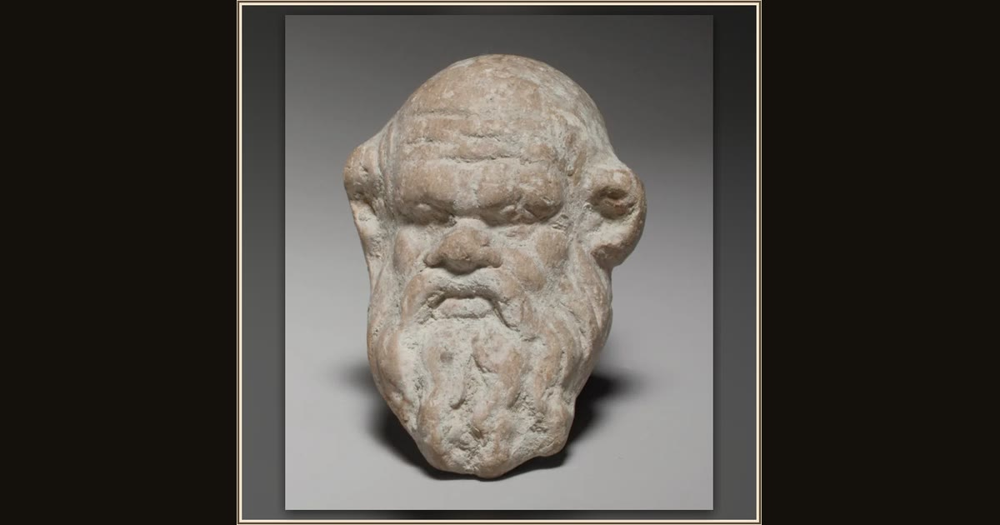

Head of Silenos
Cypriot · 2nd century BCE · met
A bald, broad-nosed, bearded terracotta head of Silenos recalls the Silenos figures Alcibiades compares to Socrates, figures that open to reveal images of gods. (215b) Explore its place in Plato's Dialogues, Symposium, section 215.